シマポスター
SHIMA POSTER
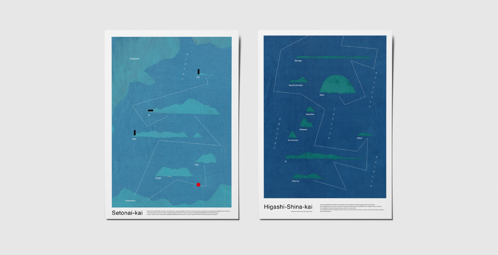
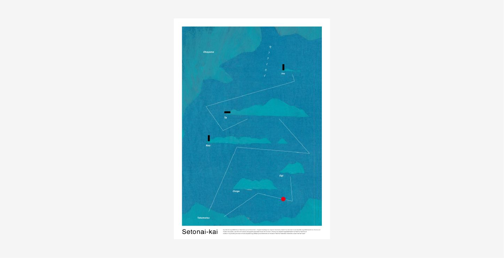
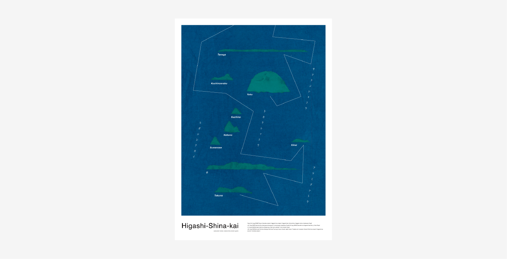
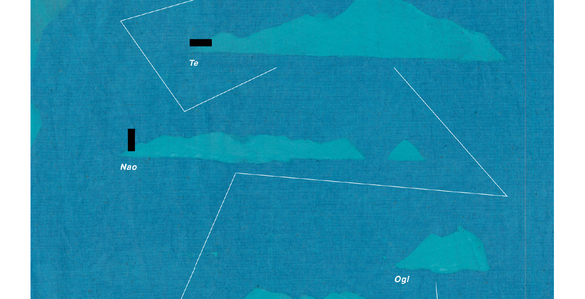
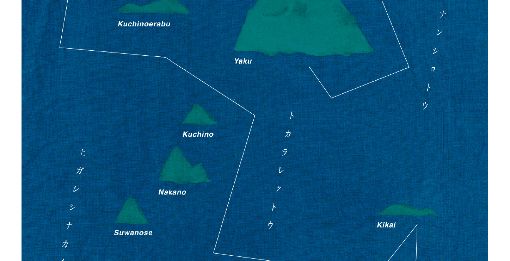
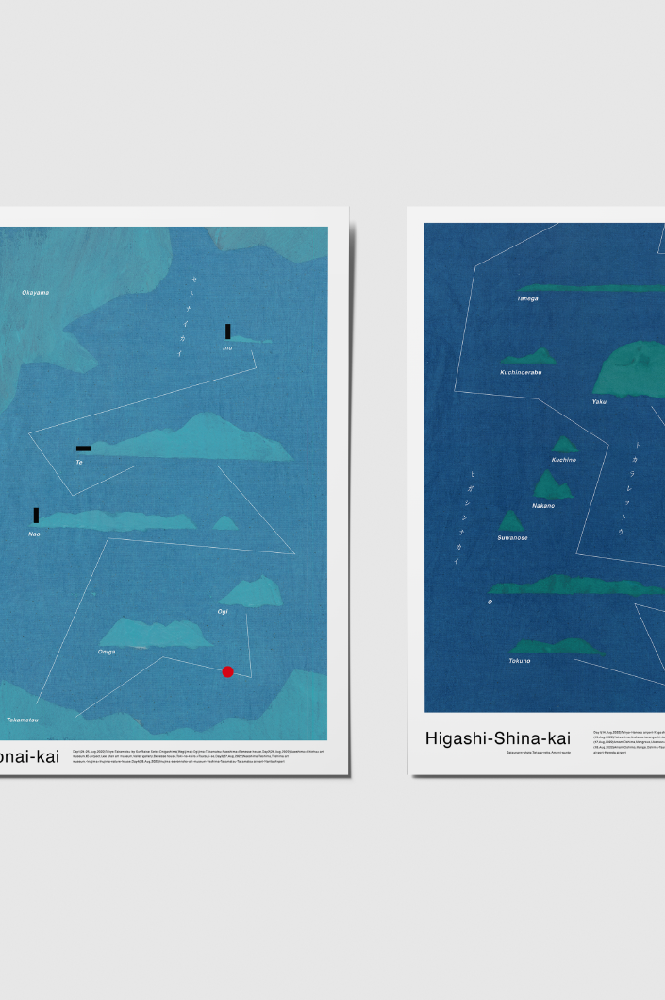
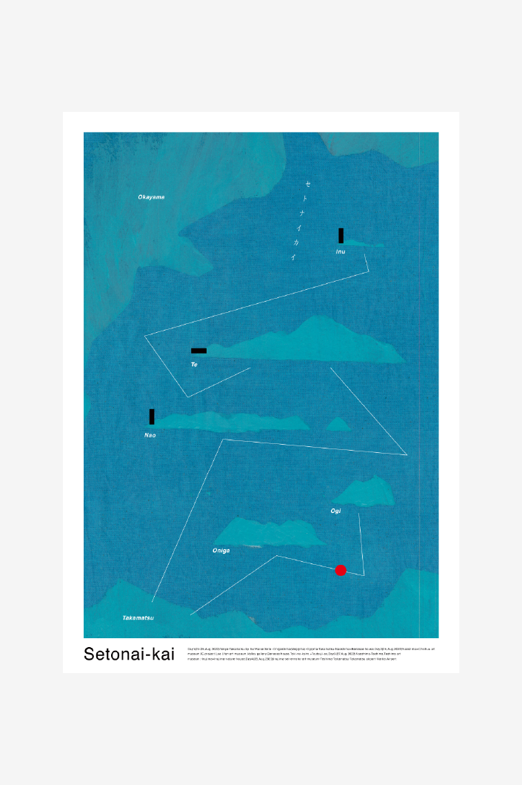
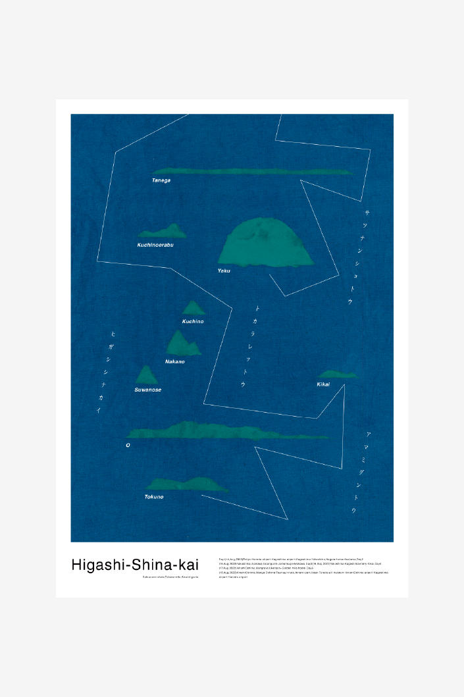
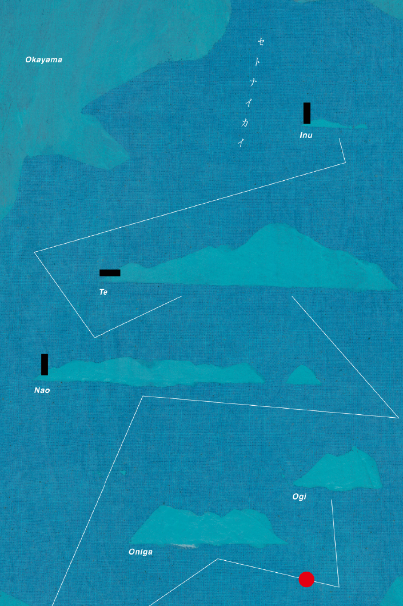
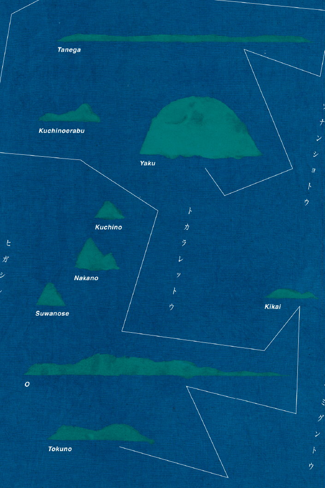
夏に訪れた島々をポスターで表現。
島を真上からでなく、横から見る。
2022年夏、私は鹿児島県の屋久島、奄美大島、香川県の女木島、男木島、直島、豊島、岡山県の犬島を訪れた。その夏の航路を記録するため実験的なシマポスターを制作した。これらの島は全てフェリーで上陸した。海上を長く走ると島がうっすら見えてくる。これが「シマ」の第一印象である。いつもは地図で見るため上から見た時の形ばかりに目がいく。しかし実際に行ってみると、地図ではわからなかった横から見た形がとても印象的でその島を表すものになっている。1つ1つの島を横から見た形で表現した。
奄美大島では伝統的な泥染めを観た。染物をグラフィックに利用できないかと考え、青色に染めたコットン地をスキャンして地として利用した。
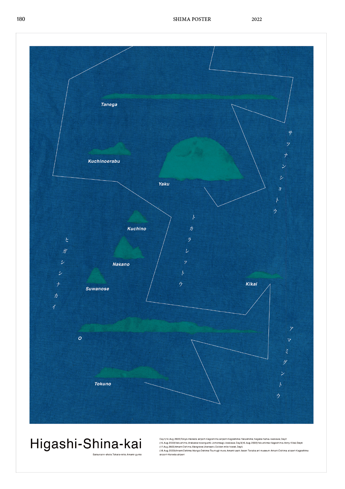
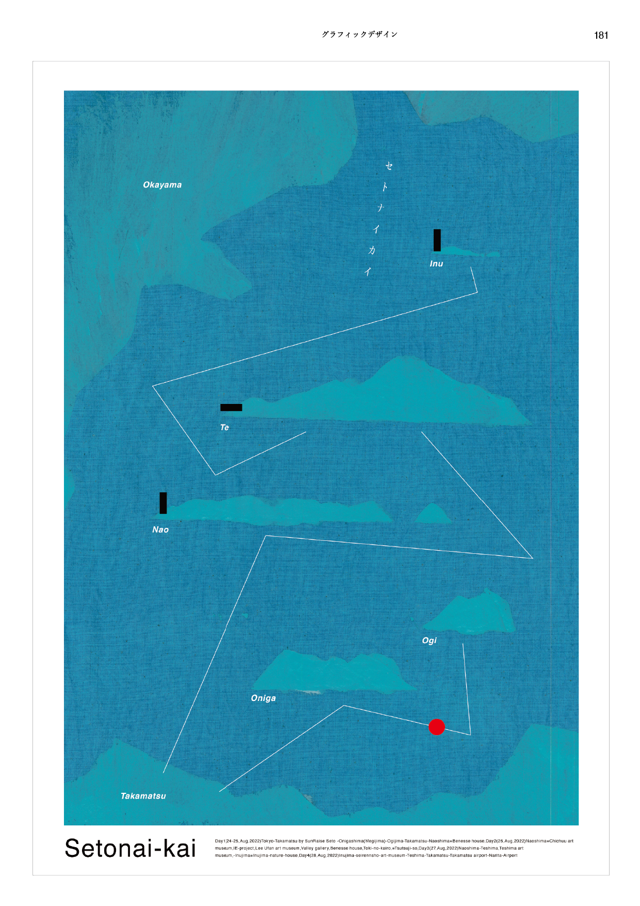